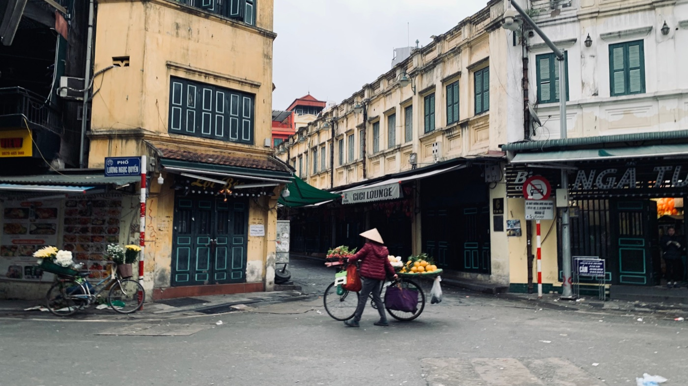

실전
오토바이로 짐 안전하게 싣는 법

봉지 두어 개는 캐리어보다 조작에 영향을 덜 주지만, 제대로 고정하지 않은 짐은 바퀴에 들어가거나, 핸들에 걸리거나, 제동 시 밀릴 수 있습니다. 규칙은 간단합니다: 짐은 작고, 고정되어 있고, 조작을 방해하지 않아야 합니다.
어디에 둘까
- 시트 아래: 열에 강한 작은 귀중품에 가장 좋습니다.
- 기본 고리: 무릎에 닿지 않고 흔들리지 않는 가벼운 봉지만.
- 탑박스: 허용 하중 안에서 헬멧, 우비, 장본 짐에 편합니다.
- 뒤 짐받이: 믿을 만한 끈으로, 늘어지는 끝 없이만.
- 배낭: 가벼운 물건에 적합; 무거운 배낭은 피로하고 균형을 바꿉니다.

무게 배분
무거운 것은 낮게, 오토바이 중심 가까이 두세요. 핸들 한쪽에만 무거운 짐을 걸지 마세요. 뒤 짐이 차체 밖으로 많이 튀어나오거나 앞바퀴 하중을 빼면 안 됩니다.
짐받이와 탑박스의 허용 하중을 확인하세요. 플라스틱 받침대는 튼튼해 보여도 무거운 캐리어용이 아닙니다.
무엇으로 고정할까
온전한 고정 벨트나 좋은 짐 그물을 쓰세요. 일반 밧줄은 쉽게 풀리고, 고무 고리는 튕겨 나갈 수 있습니다. 남는 끝은 바퀴, 구동 벨트, 체인에 들어가지 않게 정리하세요.
출발 전 확인
- 손으로 짐을 흔들어 본다: 오토바이와 따로 움직이면 안 된다.
- 핸들을 양쪽으로 끝까지 돌려 본다.
- 미러 시야를 확인한다.
- 라이트가 작동하고 번호판이 가려지지 않았는지 본다.
- 처음 100m는 천천히 달리고 멈춰서 다시 확인한다.
주행이 어떻게 달라지나
짐이 있으면 가속이 약해지고, 제동 거리가 길어지고, 커브에서 오토바이가 더 천천히 기웁니다. 거리를 늘리고 평소 속도로 달리려 하지 마세요. 50cc는 과적이 특히 뚜렷합니다.
직접 싣지 않는 게 나은 것
큰 캐리어, 유리, 긴 물건, 무거운 가전, 핸들이나 라이트를 가리는 짐은 택시나 배송으로 보내는 게 안전합니다. 한 번 아끼는 비용이 사고 값어치는 없습니다.
비와 귀중품
가게 봉지는 방수 포장이 아닙니다. 서류와 전자기기는 따로 밀봉 봉투에 넣으세요. 비가 시작되면 도로 밖에 멈춰 다시 싸세요.
장거리를 계획한다면 먼저 출발 전 오토바이 점검을 읽어보세요.